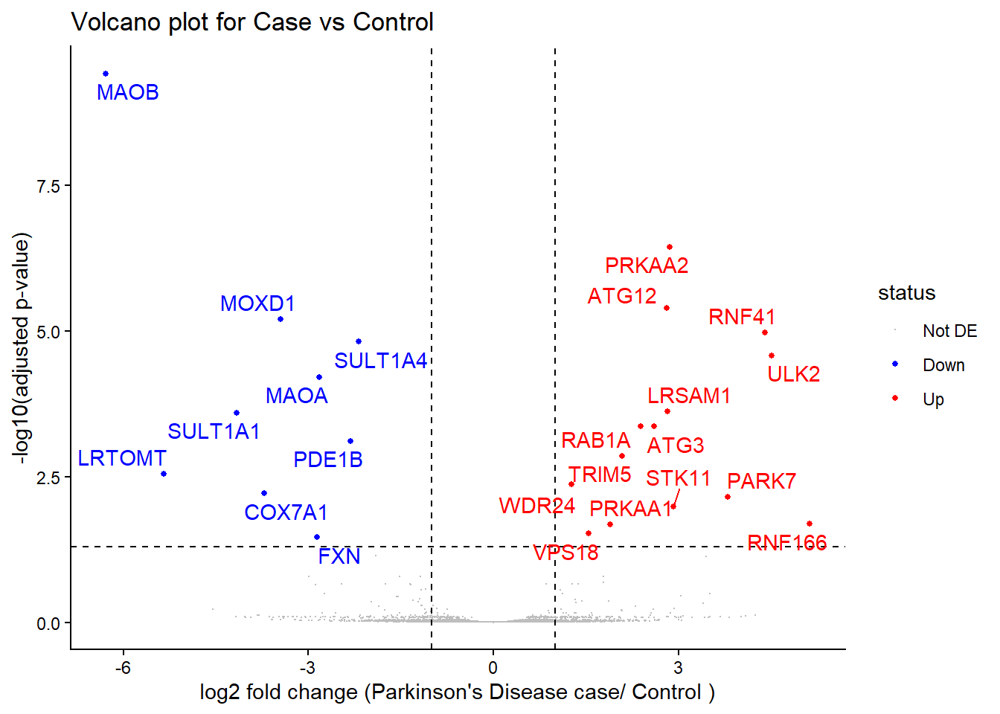
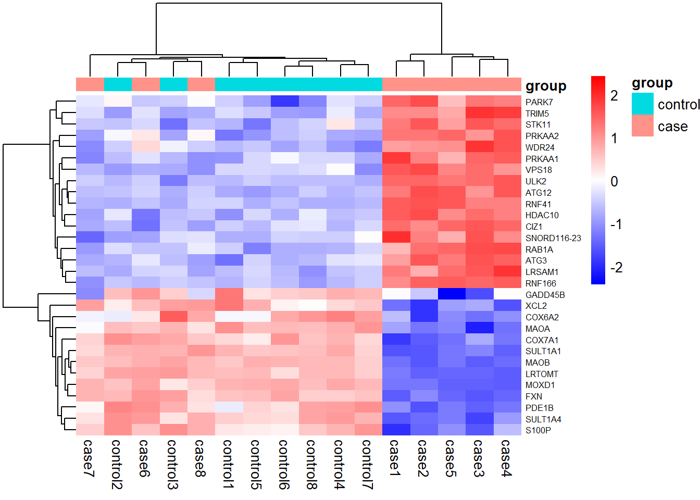

This section analyse the RNA-seq data using these dataset:
rnsaeq.Rda = DGE list
rnaseq_seq_gene_info.Rda = gene names and gene ontology data
The dataset comparing PD neurons with induced pluripotent stem cell (iPSCs) from 8 patients with Parkinson’s Disease (PD) and 8 healthy patients. the cells were differentiated into dopaminergic neurons then the RNA were sequenced.
Running Code
# loading all the librarylibrary(tidyverse)
── Attaching core tidyverse packages ──────────────────────── tidyverse 2.0.0 ──
✔ dplyr 1.2.1 ✔ readr 2.2.0
✔ forcats 1.0.1 ✔ stringr 1.6.0
✔ ggplot2 4.0.3 ✔ tibble 3.3.1
✔ lubridate 1.9.5 ✔ tidyr 1.3.2
✔ purrr 1.2.2
── Conflicts ────────────────────────────────────────── tidyverse_conflicts() ──
✖ dplyr::filter() masks stats::filter()
✖ dplyr::lag() masks stats::lag()
ℹ Use the conflicted package (<http://conflicted.r-lib.org/>) to force all conflicts to become errors
Loading required package: Glimma
Loading required package: gplots
---------------------
gplots 3.3.0 loaded:
* Use citation('gplots') for citation info.
* Homepage: https://talgalili.github.io/gplots/
* Report issues: https://github.com/talgalili/gplots/issues
* Ask questions: https://stackoverflow.com/questions/tagged/gplots
* Suppress this message with: suppressPackageStartupMessages(library(gplots))
---------------------
Attaching package: 'gplots'
The following object is masked from 'package:stats':
lowess
Loading required package: RColorBrewer
Loading required package: Mus.musculus
Loading required package: AnnotationDbi
Loading required package: stats4
Loading required package: BiocGenerics
Loading required package: generics
Attaching package: 'generics'
The following object is masked from 'package:lubridate':
as.difftime
The following object is masked from 'package:dplyr':
explain
The following objects are masked from 'package:base':
as.difftime, as.factor, as.ordered, intersect, is.element, setdiff,
setequal, union
Attaching package: 'BiocGenerics'
The following object is masked from 'package:limma':
plotMA
The following object is masked from 'package:dplyr':
combine
The following objects are masked from 'package:stats':
IQR, mad, sd, var, xtabs
The following objects are masked from 'package:base':
anyDuplicated, aperm, append, as.data.frame, basename, cbind,
colnames, dirname, do.call, duplicated, eval, evalq, Filter, Find,
get, grep, grepl, is.unsorted, lapply, Map, mapply, match, mget,
order, paste, pmax, pmax.int, pmin, pmin.int, Position, rank,
rbind, Reduce, rownames, sapply, saveRDS, table, tapply, unique,
unsplit, which.max, which.min
Loading required package: Biobase
Welcome to Bioconductor
Vignettes contain introductory material; view with
'browseVignettes()'. To cite Bioconductor, see
'citation("Biobase")', and for packages 'citation("pkgname")'.
Loading required package: IRanges
Loading required package: S4Vectors
Attaching package: 'S4Vectors'
The following object is masked from 'package:gplots':
space
The following objects are masked from 'package:lubridate':
second, second<-
The following objects are masked from 'package:dplyr':
first, rename
The following object is masked from 'package:tidyr':
expand
The following object is masked from 'package:utils':
findMatches
The following objects are masked from 'package:base':
expand.grid, I, unname
Attaching package: 'IRanges'
The following object is masked from 'package:lubridate':
%within%
The following objects are masked from 'package:dplyr':
collapse, desc, slice
The following object is masked from 'package:purrr':
reduce
The following object is masked from 'package:grDevices':
windows
Attaching package: 'AnnotationDbi'
The following object is masked from 'package:dplyr':
select
Loading required package: OrganismDbi
Loading required package: Seqinfo
Loading required package: GenomicFeatures
Loading required package: GenomicRanges
Loading required package: GO.db
Loading required package: org.Mm.eg.db
Loading required package: TxDb.Mmusculus.UCSC.mm10.knownGene
Loading required package: R.utils
Loading required package: R.oo
Loading required package: R.methodsS3
R.methodsS3 v1.8.2 (2022-06-13 22:00:14 UTC) successfully loaded. See ?R.methodsS3 for help.
R.oo v1.27.1 (2025-05-02 21:00:05 UTC) successfully loaded. See ?R.oo for help.
Attaching package: 'R.oo'
The following object is masked from 'package:R.methodsS3':
throw
The following object is masked from 'package:GenomicRanges':
trim
The following object is masked from 'package:IRanges':
trim
The following object is masked from 'package:generics':
compile
The following objects are masked from 'package:methods':
getClasses, getMethods
The following objects are masked from 'package:base':
attach, detach, load, save
R.utils v2.13.0 (2025-02-24 21:20:02 UTC) successfully loaded. See ?R.utils for help.
Attaching package: 'R.utils'
The following object is masked from 'package:generics':
evaluate
The following object is masked from 'package:tidyr':
extract
The following object is masked from 'package:utils':
timestamp
The following objects are masked from 'package:base':
cat, commandArgs, getOption, isOpen, nullfile, parse, use, warnings
Loading required package: TeachingDemos
Loading required package: statmod
Loading required package: BiocWorkflowTools
library(pheatmap)library(ggrepel)
Step 1: Loads our data
#assign the data to a variablegene_info <-load("C:/r_course/BIOL90042_GROUP_4_PROJECT/BIOL90042_Group_Project/data/rnaseq_gene_info.Rda") load("C:/r_course/BIOL90042_GROUP_4_PROJECT/BIOL90042_Group_Project/data/rnaseq.Rda") # This is the dge list that contains all of our informations# Find group of the samplesdge$samples$group
[1] control control control control control control control control case
[10] case case case case case case case
Levels: control case
# change the entrez_gename_key as charactergenes_key <- entrez_genename_key %>%mutate(entrezid =as.character(entrezid))
Here we have 2 levels: control and case group compromise of both 8 patients
Step 2: Filtering the data
# Filtering our data# keep is our logical vector of which rows to keepkeep <-filterByExpr(dge)# use the table() function to see how many genes we# will keep (TRUE) and how many we will filter out (FALSE)table(keep)
keep
FALSE TRUE
250 9846
# proportions gives us the proportions rather than# just the countsproportions(table(keep))
keep
FALSE TRUE
0.02476228 0.97523772
#performing filter on our dgedge <- dge[keep, , keep.lib.sizes =FALSE]# check the dimensions of the count matrix to see they# have reduceddim(dge$counts)
[1] 9846 16
We started with 10096 gene and now after filtering it reduced to 9846 genes. It means 250 (2.48 %) genes filtered out.
Step 3: Normalisations
# Normalise our datadge <-normLibSizes(dge, method ="TMM") # TMM = trimmed mean of M-valuesdge$samples
group lib.size norm.factors donorid
control1 control 26706253 1.0137283 d226
control2 control 16290981 1.0459721 d049
control3 control 26464457 1.0295784 d293
control4 control 26197484 1.0338799 d178
control5 control 21062637 1.0426720 d238
control6 control 19781008 1.0447113 d192
control7 control 17916848 1.0528182 d195
control8 control 22473082 1.0536278 d182
case1 case 22323613 0.9047768 d031
case2 case 28767232 0.8862542 d102
case3 case 28159098 0.9373097 d209
case4 case 31888828 0.9390711 d131
case5 case 21106893 0.9037973 d261
case6 case 18562432 1.0744567 d184
case7 case 25365414 1.0356742 d008
case8 case 27254561 1.0329511 d215
TMM factor range 1.016 to 1.052 in control sample, showing minimal differences in RNA compositions. While in case group ranging from 0.88-1.075, showing a quite diverse different between case sample. These adjust the compositions of the library sizes and not measures the biological variability.
Each point on the MDS plot represents one patient sample. Distances between points reflect differences in gene-expression profiles: samples closer together have more similar expression profiles, whereas samples farther apart are more different. The two dimensions account for approximately 9% and 7% of the MDS variation, showing the overall structure. Most PD cases appear separated from the healthy controls, although some cases cluster close to the controls. Overall, the plot suggests that gene-expression patterns are partly consistent with disease status, but the differentiation of the case group cannot be distinguished from this plot alone.
Step 5: Linear modeling and variance modelling using voom()
# creating design matrixdesign <-model.matrix(~0+ group, data = dge$samples) # rename the columns of the design matrix to be just 'Control' or 'Case'. Instead of 'groupControl'colnames(design) <-c("Control", "Case")design
# doing the statistical testingefit <-eBayes(vfit)efit
An object of class "MArrayLM"
$coefficients
Contrasts
CasevsControl
105375297 -0.3528492
8722 0.8537395
5562 1.8989207
83933 3.4482531
11315 3.7945923
9841 more rows ...
$stdev.unscaled
Contrasts
CasevsControl
105375297 0.2931942
8722 0.4277305
5562 0.2756395
83933 0.3802158
11315 0.5497937
9841 more rows ...
$sigma
[1] 1.217200 1.269835 3.175117 5.172717 2.838907
9841 more elements ...
$df.residual
[1] 14 14 14 14 14
9841 more elements ...
$cov.coefficients
Contrasts
Contrasts CasevsControl
CasevsControl 0.25
$pivot
[1] 1 2
$rank
[1] 2
$genes
genes
105375297 105375297
8722 8722
5562 5562
83933 83933
11315 11315
9841 more rows ...
$Amean
105375297 8722 5562 83933 11315
7.312434 5.297227 8.054655 6.594329 5.243934
9841 more elements ...
$method
[1] "ls"
$design
Control Case
control1 1 0
control2 1 0
control3 1 0
control4 1 0
control5 1 0
11 more rows ...
$contrasts
Contrasts
Levels CasevsControl
Control -1
Case 1
$df.prior
[1] 68.81619
$s2.prior
[1] 1.027266
$var.prior
[1] 2.107621
$proportion
[1] 0.01
$s2.post
[1] 1.104067 1.126196 2.557853 5.376854 2.216041
9841 more elements ...
$t
Contrasts
CasevsControl
105375297 -1.145344
8722 1.880824
5562 4.307523
83933 3.911154
11315 4.636352
9841 more rows ...
$df.total
[1] 82.81619 82.81619 82.81619 82.81619 82.81619
9841 more elements ...
$p.value
Contrasts
CasevsControl
105375297 2.553656e-01
8722 6.351054e-02
5562 4.510959e-05
83933 1.873380e-04
11315 1.308522e-05
9841 more rows ...
$lods
Contrasts
CasevsControl
105375297 -5.582190
8722 -4.248591
5562 1.872562
83933 0.641360
11315 2.695043
9841 more rows ...
$F
[1] 1.311814 3.537498 18.554753 15.297123 21.495764
9841 more elements ...
$F.p.value
[1] 2.553656e-01 6.351054e-02 4.510959e-05 1.873380e-04 1.308522e-05
9841 more elements ...
This plot shows a relationship between average gene expression and residual variability. Each black point represents a gene. The graph showed that higher count genes have less variability compared to lower count gene. This accounts for the mean-variance relationship between the samples, but it still does not distinguish DE genes nor statistical assumptions.
#statistical testing to identify significant genesdt <-decideTests(efit)summary(dt)
CasevsControl
Down 9
NotSig 9823
Up 14
top <-topTable(efit, coef ="CasevsControl", n =Inf)# I want to convert top dataframe to tibble and combine genes_key variable to the top_tibble.top_tibble <-as_tibble(top)top_tibble <- top_tibble %>%na.omit() %>% dplyr::mutate(genes =as.character(genes)) %>% dplyr::rename(entrezid = genes) %>%left_join(genes_key, by ="entrezid")top_tibble # Now we have a top_tibble dataframe that have gene names on each
We classified the genes using decideTests() with Benjamini-Hochberg (BH) adjustment to account for multiple genes and an adjusted p-value threshold of 0.05. The adjustment using BH can control false positives among the results. There’s other methods that can be used to normalise the data, which is Bonferroni correction however it can reduce the number of sets and introduce a false negative or type II error(Armstrong 2014).
TopTable () was used to get the numerical results from statistical testing comparing the control group to the case group, providing the p-value and adjusted p-value. We found 23 significant genes, with missing information on which genes are up-regulated or down-regulated. In the top_tibble, we found a missing gene name with Entrez ID “124907837”. We used https://gtexportal.org and found that SULT1A4 encodes sulfotransferase family 1A member 4, which matches the Entrez ID. SULT1A4 is responsible for catalyzing the sulfation reaction on dopamine to dopamine-sulfate. This reaction results in a depletion of dopamine concentration and a clear biomarker for Parkinson’s Disease [Chen et al. (2021); ].
# updating top_tibble dataframe with a new name top_tibble_updated <- top_tibble %>%mutate(entrezid =as.character(entrezid),gene_name =ifelse( entrezid =="124907837","SULT1A4", gene_name ), # add description entrezid =as.character(entrezid),description =ifelse( entrezid =="124907837","sulfotransferase family 1A member 4", description ) )top_tibble_updated
Which genes are differentially expressed between PD cases and healthy controls? Please also visualise your DE results with appropriate plot(s)
# Creating volcano plot variablevol_plot_data <-tibble(entrezid =as.character(rownames(efit$coefficients)),logFC = efit$coefficients[, "CasevsControl"],AvgExpr = efit$Amean,status =factor(as.numeric(dt[, "CasevsControl"])),gene = efit$genes$SYMBOL,p_value = efit$p.value[, "CasevsControl"]) %>%left_join(top_tibble_updated %>%transmute(entrezid =as.character(entrezid), gene_name) %>%distinct(), by ="entrezid" ) %>%left_join( top_tibble %>% dplyr::select(entrezid, adj.P.Val),by ="entrezid" )# Edditing our vol_plot_data tibble so they can be assigned to a new factor vol_plot_data_fct <- vol_plot_data %>%mutate(# replace status with a new factorstatus =factor( status,# levels (order is not DE, down, up)levels =c(0, -1, 1),# labels for the numbers so they are readblelabels =c("Not DE", "Down", "Up") ) )#assigning the colour for each up, down, and not significantscale_cols <-c("Not DE"="grey","Down"="blue","Up"="red")
#creating a volcano plotvol_plot_image<-ggplot( vol_plot_data_fct, aes(x = logFC, y =-log10(pmax(adj.P.Val, 1e-300)), col = status)) +geom_point(data = vol_plot_data_fct %>%filter(status =="Not DE"),size =0.1 ) +geom_point(data = vol_plot_data_fct %>%filter(status !="Not DE"), size =1) +geom_vline(xintercept =c(-1,1), color ="black", linetype ="dashed") +geom_hline(yintercept =-log10(0.05), color ="black", linetype ="dashed") +geom_text_repel(data = vol_plot_data_fct %>%filter(status !="Not DE"),aes(label = gene_name, ),max.overlaps =Inf,show.legend =FALSE) +scale_colour_manual(values = scale_cols) +theme_classic() +labs(title ="Volcano plot for Case vs Control",x ="log2 fold change (Parkinson's Disease case/ Control )",y ="-log10(adjusted p-value)")vol_plot_image

ggsave("C:/r_course/BIOL90042_GROUP_4_PROJECT/BIOL90042_Group_Project/result/rnaseq_PD volcano.png", width =23, height =17, units ="cm")
The volcano plot compares gene expression between PD case and healthy control samples. The x-axis shows log2 fold change between control relative to case, while the y-axis shows - log10 of the p-value. Higher points are more significant compared to lower points. Genes that have higher expression on both down-regulated or up-regulated has the positions more to the left or right, respectively.
Overall, 14 genes have higher expression in PD while 9 have lower expression in PD. MAOB shows the strongest gene expression and statistical evidence. PRKAA2 has the strongest evidence among genes higher in PD, while ULK2 has the strongest expression. Among down-regulated genes, PRKAA2 has the strongest statistical evidence, while RNF166 has the highest expression difference. However, these sample shows a contrary evidence against the literature as ULK2 is supposed to be among the down-regulated genes
(Wang et al. 2026). Furthermore, MAOB is a gene responsible in producing MPP+ which can cause a cell death to dopamine producing cell which caused Parkinson’s disease (Choi et al. 2015). While some other gene such as RNF166 that responsible in cell death does belong to up-regulated genes (Oh et al. 2020).
Which gene ontology families do the DE genes belong to?
de_go_summary <- top_tibble_updated %>%# Define significance using adjusted p-values.filter(adj.P.Val <0.05) %>%mutate(entrezid =as.character(entrezid)) %>%# Add GO categories by matching Entrez IDs.inner_join( gene_ontology %>%transmute(entrezid =as.character(entrezgene_id), go_id,category = desc ) %>%distinct(),by ="entrezid" ) %>%# Count each gene once within each GO category. dplyr::distinct(go_id, category, entrezid, .keep_all =TRUE) %>%# Summarise the number and names of DE genes in each category.group_by(go_id, category) %>%summarise(de_genes =n_distinct(entrezid),up_in_pd =sum(logFC >0),down_in_pd =sum(logFC <0),gene_names =paste(sort(unique(gene_name)), collapse =","),.groups ="drop" ) %>%arrange(desc(de_genes))de_go_summary_table <- knitr::kable(de_go_summary)de_go_summary_table
These tables summarise DE genes that are up-regulated and down-regulated and group them based on their ontology-associated group. It shows that ATG12, ATG3, LRSAM1, PARK7, PRKAA1, PRKAA2, RAB1A, RNF166, RNF41, STK11, TRIM5, ULK2, VPS18, and WDR24 belong to autophagy associated genes. These have higher expression in PD cases. Seven dopamine-category genes LRTOMT, MAOA, MAOB, MOXD1, PDE1B, SULT1A1, and SULT1A4. These have lower expression in PD. While there are only two oxidative phosphorylation members, COX7A1 and FXN that also have lower expression in PD.
Is the clustering of samples by gene expression consistent with their disease status as cases and controls?
# Find top 30 most significant genes to labeltop_de_genes <- vol_plot_data_fct %>%slice_min(n =30, p_value)# filter the count matrix to find just those genestop_gene_expr <-cpm(dge, log =TRUE)[as.character(top_de_genes$entrezid), ]rownames(top_gene_expr) <- top_de_genes$gene_name# annotation information for the heatmapsample_anno <- dge$samples %>% dplyr::select(group)# creating your heatmapheatmap <-pheatmap( top_gene_expr,color =colorRampPalette(c("blue", "white", "red"))(100),scale ="row",annotation_col = sample_anno,border_color =NA,cluster_rows =TRUE,cluster_cols =TRUE,show_rownames =TRUE,show_colnames =TRUE,fontsize_row =6)

#save your heatmap by right click on your plot
Red indicates expression above the mean across samples, and blue indicates expression below the mean across samples. The differences in color intensity represent row z-scores, comparing samples within each gene. Green and pink represent the control and PD groups; dendrograms show groups with similar profiles.
Cases 1-5 show a clear, distinct grouping. Generally, have higher expression of autophagy-associated genes such as PRKAA2, ATG12, and ULK2, and lower expression of MAOB, MAOA, and COX7A1. While cases 6-8 cluster with controls. The clustering is partly consistent with disease status, but does not have a clear separation of cases from controls.
There are 30 selected genes, including 23 significant genes and 7 non-significant genes. The heatmap showed disease-associated patterns and not independent validations.
References
Armstrong, Richard A. 2014. “When to Use the b Onferroni Correction.”Ophthalmic and Physiological Optics 34 (5): 502–8. https://doi.org/10.1111/opo.12131.
Chen, Bing, Xiwen Tong, Xia Zhang, et al. 2021. “Sulfation Modification of Dopamine in Brain Regulates Aggregative Behavior of Animals.”National Science Review 9 (4). https://doi.org/10.1093/nsr/nwab163.
Choi, Se Joon, Anne Panhelainen, Yvonne Schmitz, et al. 2015. “Changes in Neuronal Dopamine Homeostasis Following 1-Methyl-4-Phenylpyridinium (MPP+) Exposure.”Journal of Biological Chemistry 290 (11): 6799–809. https://doi.org/10.1074/jbc.m114.631556.
Oh, Chang-Ki, Young Ki Choi, Ih-Yeon Hwang, et al. 2020. “RING-Finger Protein 166 Plays a Novel Pro-Apoptotic Role in Neurotoxin-Induced Neurodegeneration via Ubiquitination of XIAP.”Cell Death & Disease 11 (10). https://doi.org/10.1038/s41419-020-03145-x.
Wang, Jing, Ya-Hui Hu, Bo Wang, et al. 2026. “Cuproptosis-Associated Genes DLD, ULK2, CCL8, and CCS Link Metabolic and Immunological Dysfunction in Parkinson’s Disease: A Multi-Omics Study.”Frontiers in Immunology 17 (September). https://doi.org/10.3389/fimmu.2026.1813166.